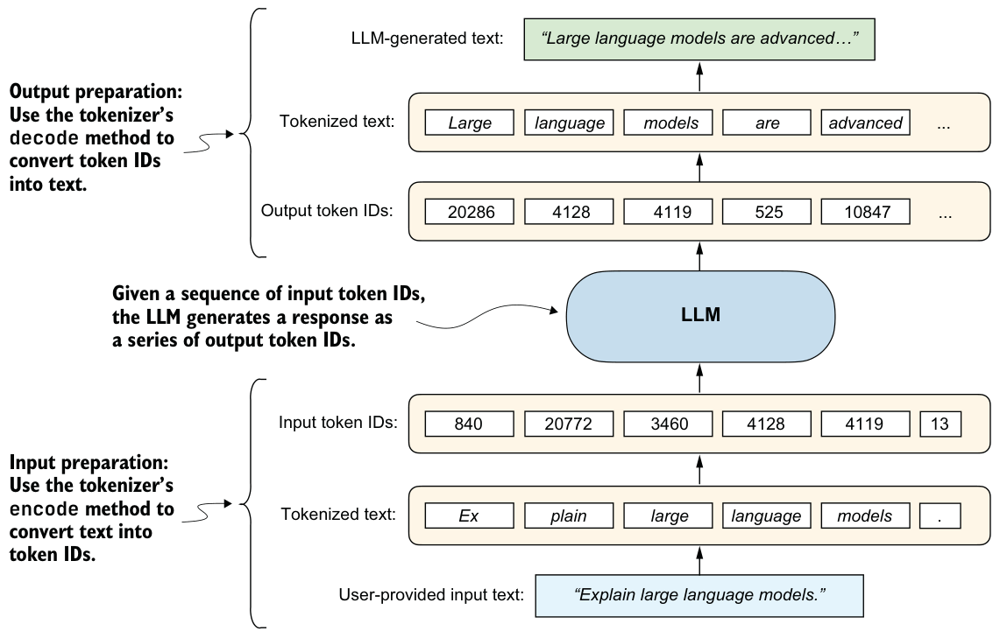
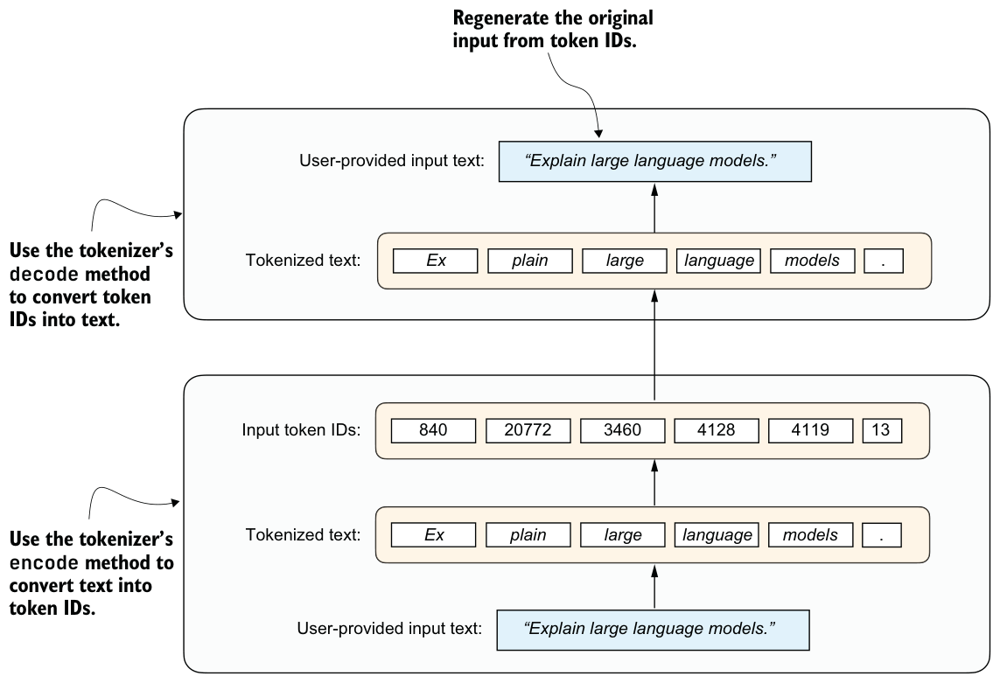

2.4Preparing input texts for LLMs
Let’s now explore how we can use a tokenizer to process input and output text for an
LLM. Tokenizers are essential because every prompt, reasoning trace, and generated answer ultimately has to be represented as token IDs before the model can process them. Figure 2.5 provides a more detailed view of the input and output preparation steps shown earlier in figure 2.2 .

To see how this works in practice, we’ll begin by loading a tokenizer from this book’s reasoning-from-scratch Python package (installed in section 2.2). To download the tokenizer files (corresponding to the Qwen3 0.6B base LLM), run this command:
from reasoning_from_scratch.qwen3 import download_qwen3_small
download_qwen3_small(kind="base", tokenizer_only=True, out_dir="qwen3")This will display a progress bar:
tokenizer-base.json: 100% (6 MiB / 6 MiB)The command downloads the tokenizer-base.json file (approximately 6 MB in size) and saves it in a qwen3 subdirectory.
Now we can load the tokenizer settings from the tokenizer file into Qwen3Tokenizer:
from pathlib import Path
from reasoning_from_scratch.qwen3 import Qwen3Tokenizer
tokenizer_path = Path("qwen3") / "tokenizer-base.json"
tokenizer = Qwen3Tokenizer(tokenizer_file_path=tokenizer_path)Since we have not loaded the LLM yet (the central component in figure 2.5), we will start with a simpler dry run using just the tokenizer. Specifically, we will do a tokenization round trip: encode a text into token IDs and then decode those IDs back to text, as illustrated in figure 2.6.

The following code snippet implements the encoding process shown at the bottom of figure 2.6:
prompt = "Explain large language models."
input_token_ids_list = tokenizer.encode(prompt)The following code implements the decoding process, converting the token IDs back into text, shown at the top of figure 2.6:
text = tokenizer.decode(input_token_ids_list)
print(text)Based on the following printed result, we can see that the tokenizer reconstructed the original input prompt from the token IDs:
'Explain large language models.'Before we move on to the LLM, let’s take a look at the token IDs generated by the encode method. The following code prints each token ID and its corresponding decoded string to illustrate how the tokenizer works:
for i in input_token_ids_list:
print(f"{i} --> {tokenizer.decode([i])}")The output is as follows:
840 --> Ex
20772 --> plain
3460 --> large
4128 --> language
4119 --> models
13 --> .As you can see in the output, the original text is split into six token IDs. Each token represents a word or subword, depending on how the tokenizer segments the input.
For example, “Explain” was split into two separate tokens, “Ex” and “plain.” This is because the tokenizer algorithm uses a subword-based method called byte pair encoding (BPE). BPE can represent both common and rare words using a mix of full words and subword units. Spaces are also often included in tokens (for example, “ large”), which helps the LLM detect word boundaries.
The Qwen3Tokenizer has a vocabulary of about 151,000 tokens, which is relatively large as of this writing (for comparison, early GPT-2 has a vocabulary of approximately 50,000 tokens, and Llama 3 has a vocabulary of approximately 128,000 tokens).
A larger vocabulary in a language model increases the model’s size because the embedding and output layers must store more token representations. It can also increase the per-token compute cost of producing next-token probabilities. A larger vocabulary also allows more words to be represented as single tokens rather than being split into subword components, which can reduce sequence length. For example, splitting a word like “Explain” into “Ex” and “plain” results in more input tokens. More tokens lead to longer input sequences, which increases processing time and resource usage. The tradeoff is between a larger vocabulary with a somewhat higher per-token cost and a smaller vocabulary that often produces longer token sequences. For instance, doubling the number of tokens in a sequence can roughly double the computational cost of running the model, since the model has to process and generate more tokens overall.
Unfortunately, the details of tokenizers and their implementations are outside the scope of this book. If you’re interested, you can find additional resources, including my from-scratch implementation, in appendix A.